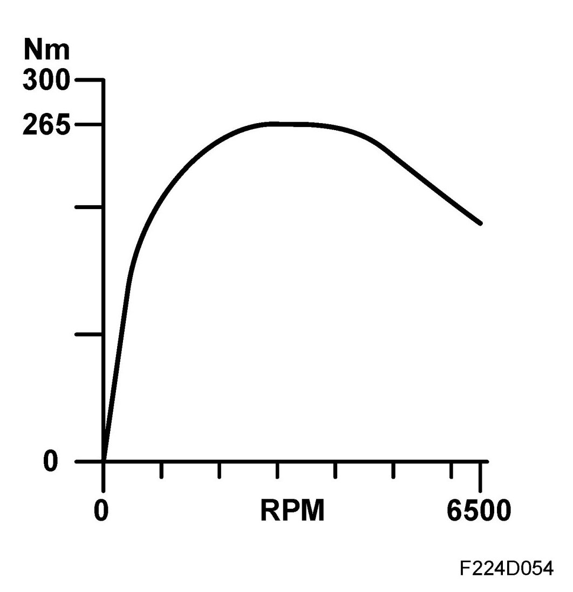
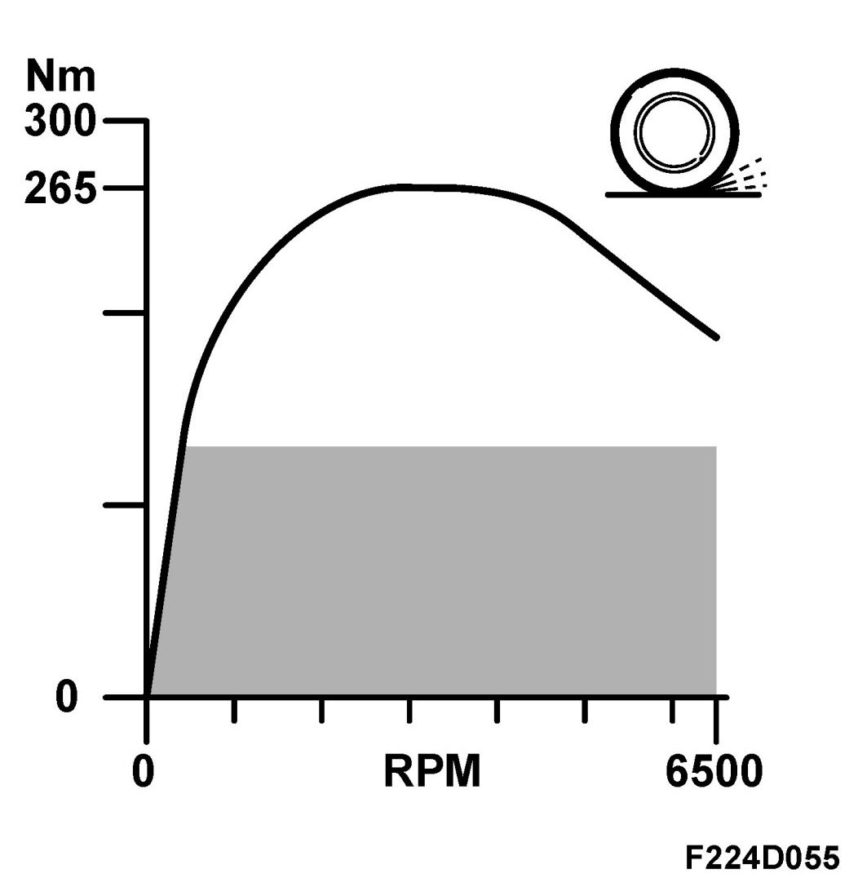
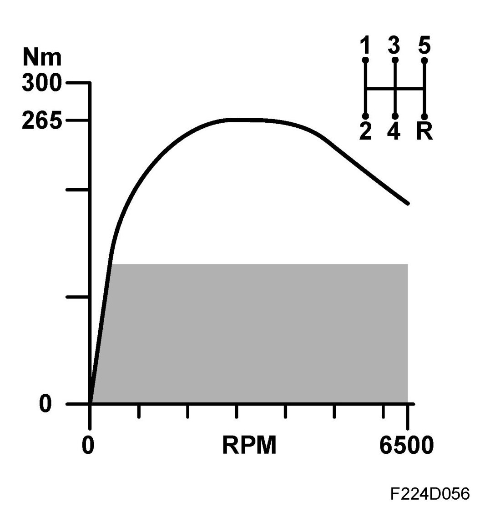
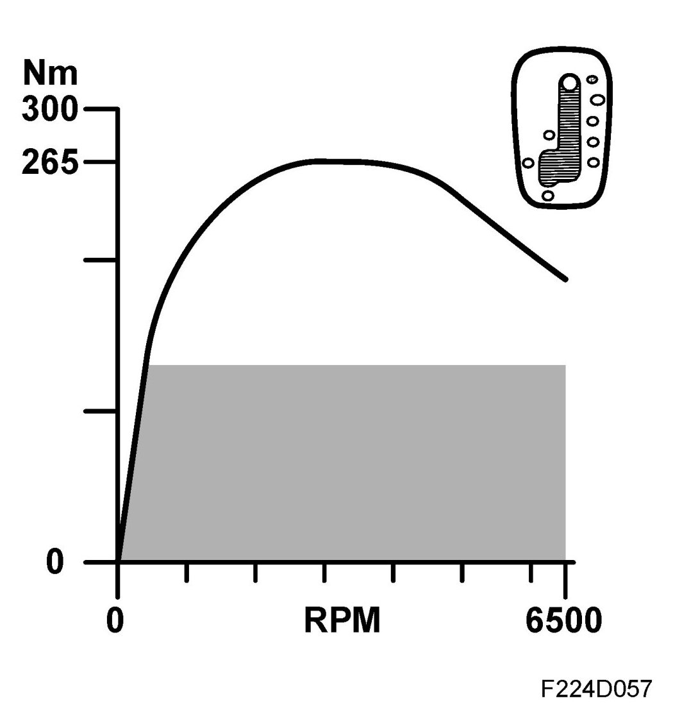
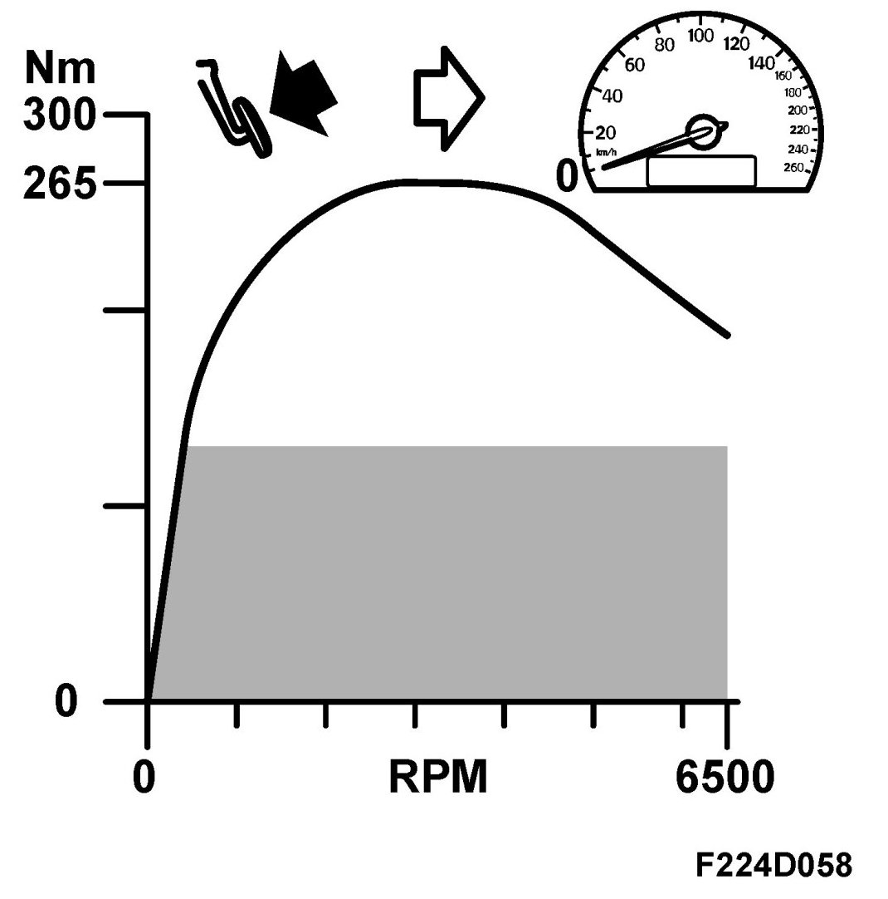
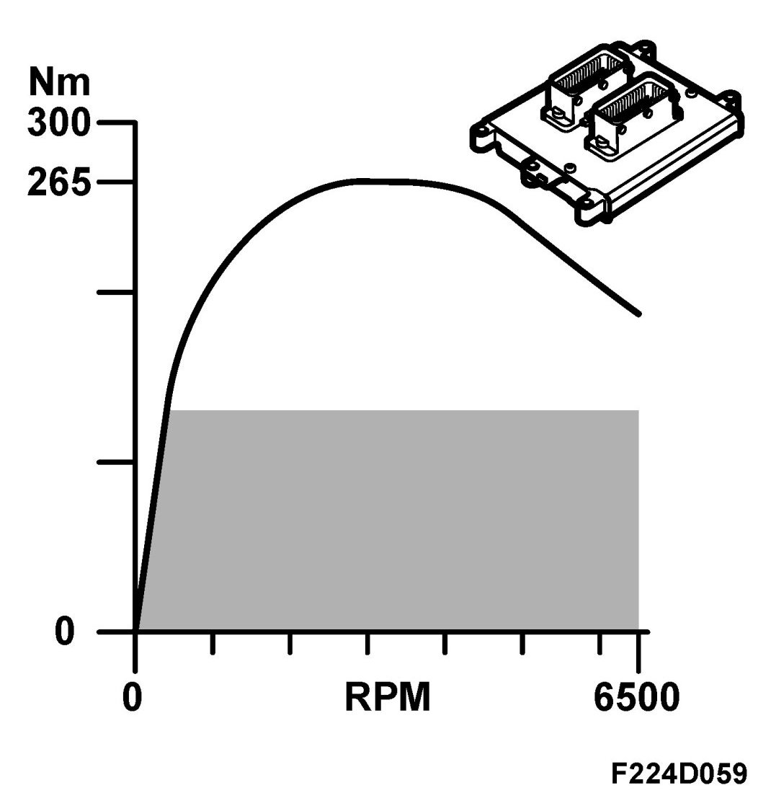
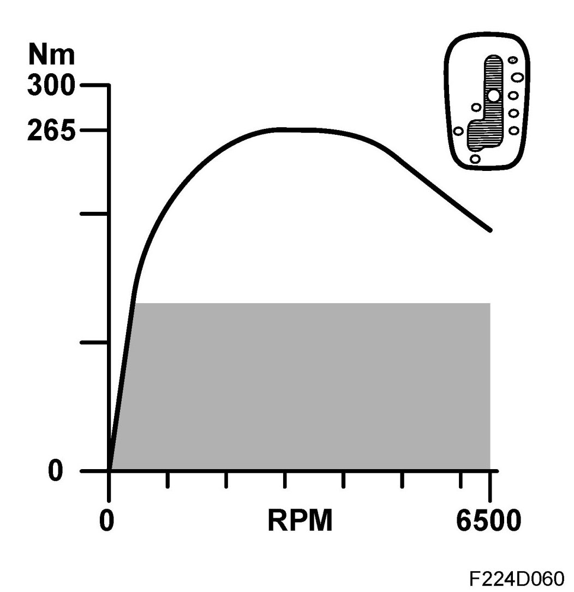
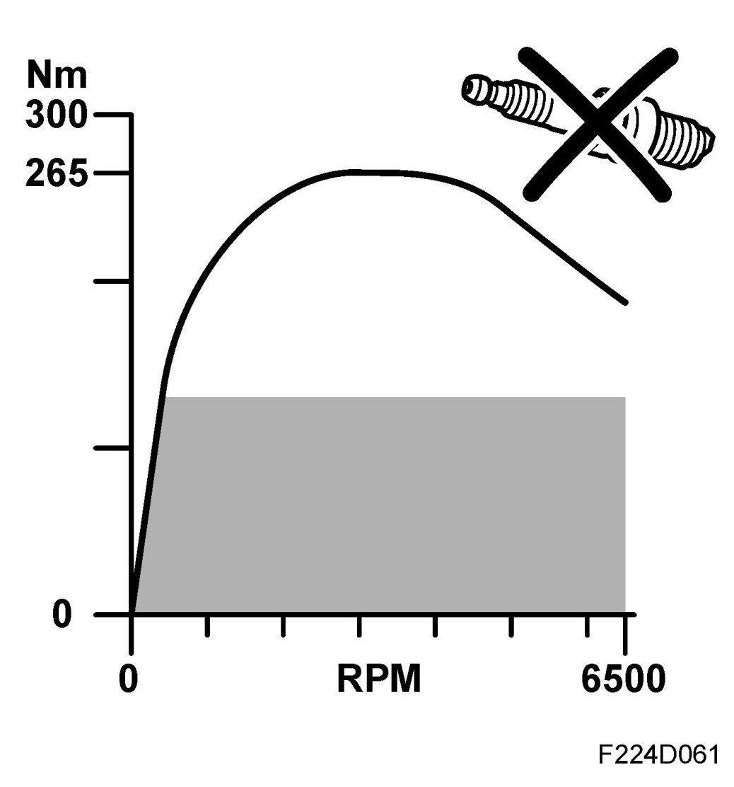
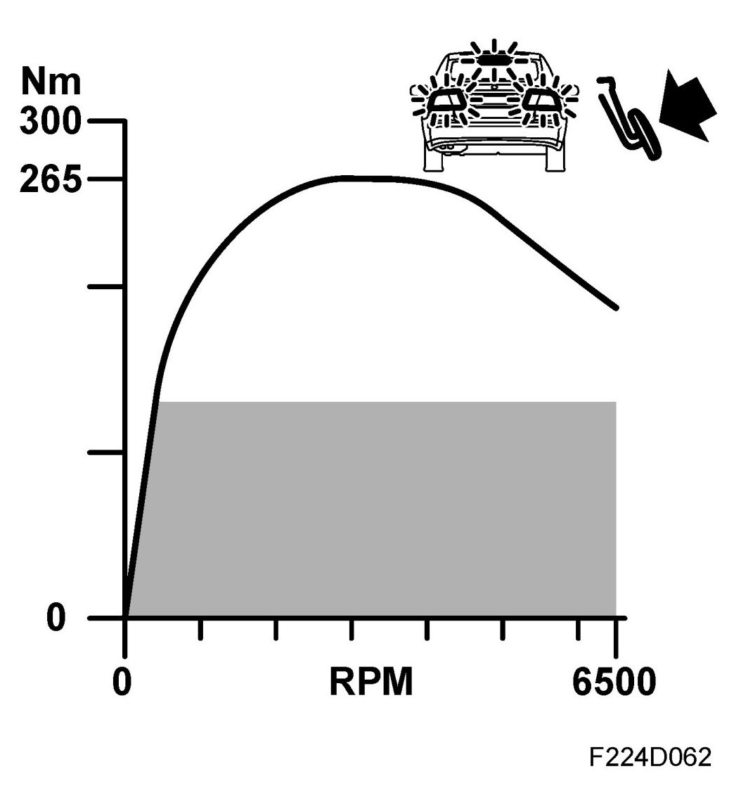

Limitation of Engine Torque, 2x
Limitation Of Engine Torque, 2x
General
The following functions can limit the engine torque requested by "Drive Master":
- Max engine torque (20)
- TCS/ESP (21)
- Manual gearbox (22)
- Automatic transmission (23)
- Stall limit (Automatic) (24)
- Special Mode (25)
- Reverse (Automatic) (26)
- Misfiring (27)
- Brake (28)
- Differential protection system (Automatic) (29)
Current torque request / limitation can be read on the diagnostic tool. See read values Torque request
Maximum engine torque
Maximum engine torque, general
The maximum engine torque allowed for the engine is stored as a table in memory. The table specifies the highest torque the engine is allowed to generate at various speeds.

Torque request from pedal exceeding maximum engine torque
In conditions close to wide open throttle when the driver (pedal) requests e.g. 300 Nm at an engine speed of 3000 rpm, while the table for maximum engine torque allows 265 Nm.
In these cases, the maximum engine torque function will limit the driver's request to 265 Nm unless another function, e.g. knock control, is limiting it further.
Torque request from pedal less than maximum engine torque
When the driver presses the accelerator pedal only lightly, a relatively low engine torque will be requested. Suppose the driver (pedal) requests 150 Nm, while the maximum engine torque function allows 235 Nm at the current speed.
In this case, the maximum engine torque function has no effect and the driver's (pedal) request will be fulfilled provided another function does not affect it.
NOTE: The graph illustrates the maximum torque allowed for the B207L engine variant. Other graphs apply to other engines.
TCS/ESP
TCS/ESP limitation, general
In case of wheel spin, TCS can lower the engine torque to reduce wheel spin. Likewise, ESP can lower the engine torque if the car skids.

Operating principle, torque limitation
ECM affects throttle area and ignition timing to reduce engine torque during TCS/ESP regulation.
NOTE: ECM can increase engine torque on request from TCS/ESP but this is covered at another point in the function chain.
Manual gearbox
Reverse gear is limited to 250 Nm.

Automatic transmission
Torque limitation, automatic transmission
Engine torque must occasionally be limited for the sake of comfort in gear changing and in certain cases also for reasons of durability.

Engine torque limitation, bus from TCM
TCM determines the maximum engine torque to be allowed. During gear changing, engine torque is often reduced somewhat for comfort. Torque can also be reduced for reasons of durability.
Engine torque limitation, stalling
Engine torque for a stalling gearbox is limited to 200 Nm to protect the gearbox.

Special mode
Special engine torque limitation.


Misfiring
To protect the turbo unit and the catalytic converter if misfiring should occur, the engine torque will be limited when there is a risk of overheating. The degree of misfiring that is allowed without engine torque limitation depends on the current operating point, engine speed and load.

Brake
Maximum permitted engine torque must be limited when the brake pedal is depressed for reasons of durability.
Maximum permitted torque with brake pedal depressed is 200 Nm.
